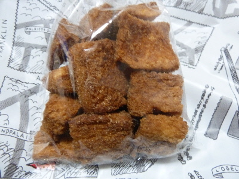
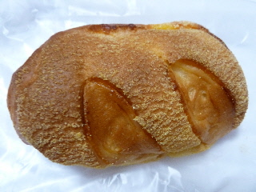
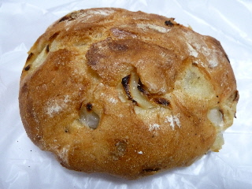
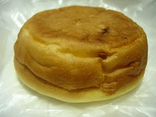

クロッカンって美味しいですね。
2016/10/20
ドンク松江店でシナモンのクロッカンを買いました。

シナモンと砂糖がしっかり入っていて美味しかったです。
これはいい！味が濃いので、一気に一袋食べなくても満足しました。
一回がちょっとでいいので、なんか経済的なお菓子ですね。
また見つけたら買おう。
島根県松江市朝日町661
閉店しました。
2016/10/20
ドンク松江店でシナモンのクロッカンを買いました。

シナモンと砂糖がしっかり入っていて美味しかったです。
これはいい！味が濃いので、一気に一袋食べなくても満足しました。
一回がちょっとでいいので、なんか経済的なお菓子ですね。
また見つけたら買おう。
2013/07/07
バトンフロマージュって名前がなんともカッコイイですね。
直訳するとチーズパンみたい。

やわらかいパンに、甘めのチーズが練り込んでありました。
期間限定商品のようです。
ちょっと変わってていいですね。
一畑百貨店内のパン屋さん、ドング松江店のタマネギパンです。

コレ、マツコデラックスさんが絶賛らしいです。
お店にそう書いてありました。
それってどんな味？って思って買いました。
玉葱の甘みが特徴的なパンでした。シンプルな美味しさですね。
こうゆうのが好きなんだ。
2009/2/8
見た目はよく分かりませんが、メロンパンのようなクッキー生地で出来たパンです。

食べるとメロンパンのような甘い味がしました。そしてその中にドーンと爽やかな甘さのクリームチーズが入ってました。
クリームチーズが好きなので、しっかりと量が入っててうれしかったです。